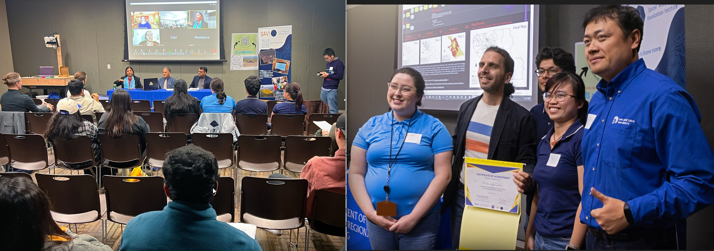

Celebrating Innovation and Collaboration at SJSU GIS Day
2 minutes read
The SJSU SAVi Center and the GIS & Drone Society are thrilled to express our heartfelt thanks to all the participants and attendees for making GIS Day an outstanding success! Hosted by Dr. Bo Yang, this year's event was particularly special as we introduced the first-ever GIS Day housing panel, featuring esteemed faculty members Dr. Laxmi Ramasubramanian, Dr. Shishir Mathur, Dr. Jochen Albrecht, Deborah Rojas, and Jeffrey Hare, who shared their insights on housing and GIS. The GeoFly Lab team presented impressive drone demonstrations, and attendees were also treated to SJSU's first augmented reality sandbox, created by Owen Hussey and Henri Brillion.

In addition to the engaging panels and showcases, we held a post-competition to highlight GIS-related student research from SJSU and Foothill College. Xiangyu REN was awarded first place by the Judges' Panel, with Melina Kompella and Nazma Shaik, along with Vaibhav Gopalakrishnan, securing second and third places, respectively. The Public’s Choice Awards were bestowed upon Henri Brillon, Sofia Silva et al., and Riannon Regan et al., recognizing their exceptional contributions.

Congratulations to all the student post winners! A huge thank you to everyone who supported and participated in this event, helping to foster a deeper understanding and appreciation of GIS in our community. Your enthusiasm and engagement made GIS Day truly memorable.